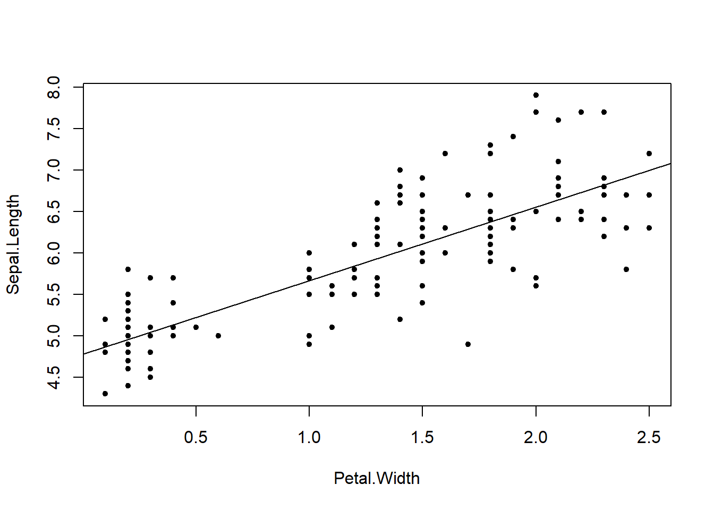
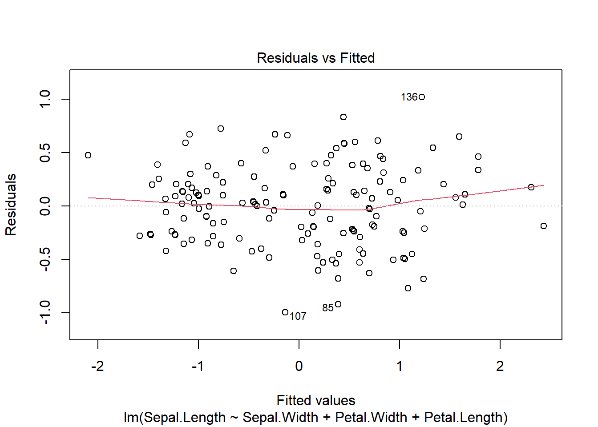
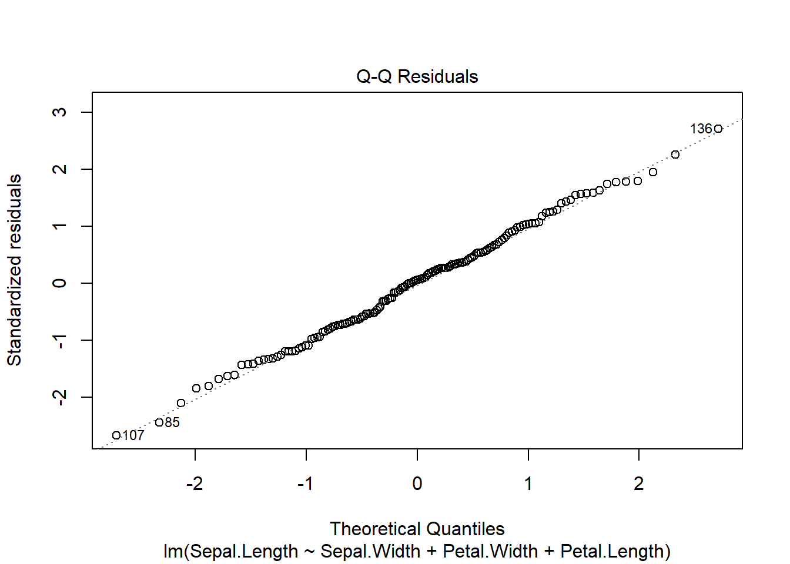
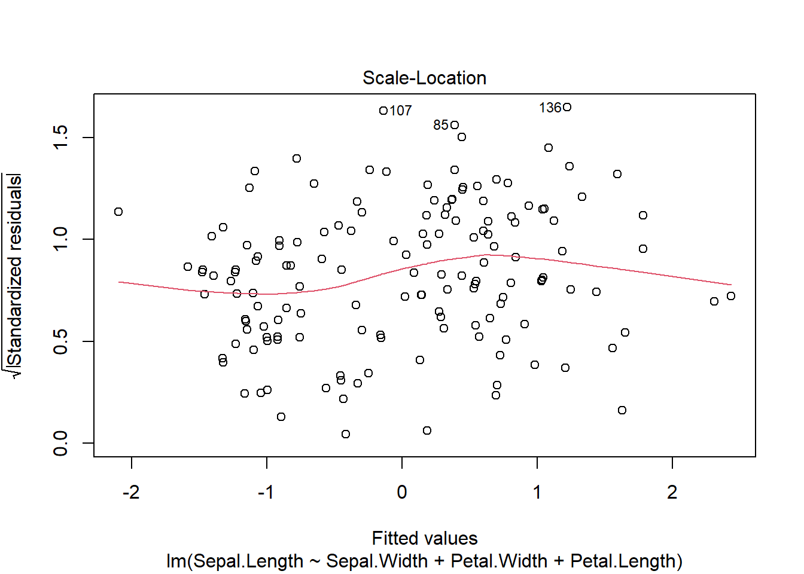
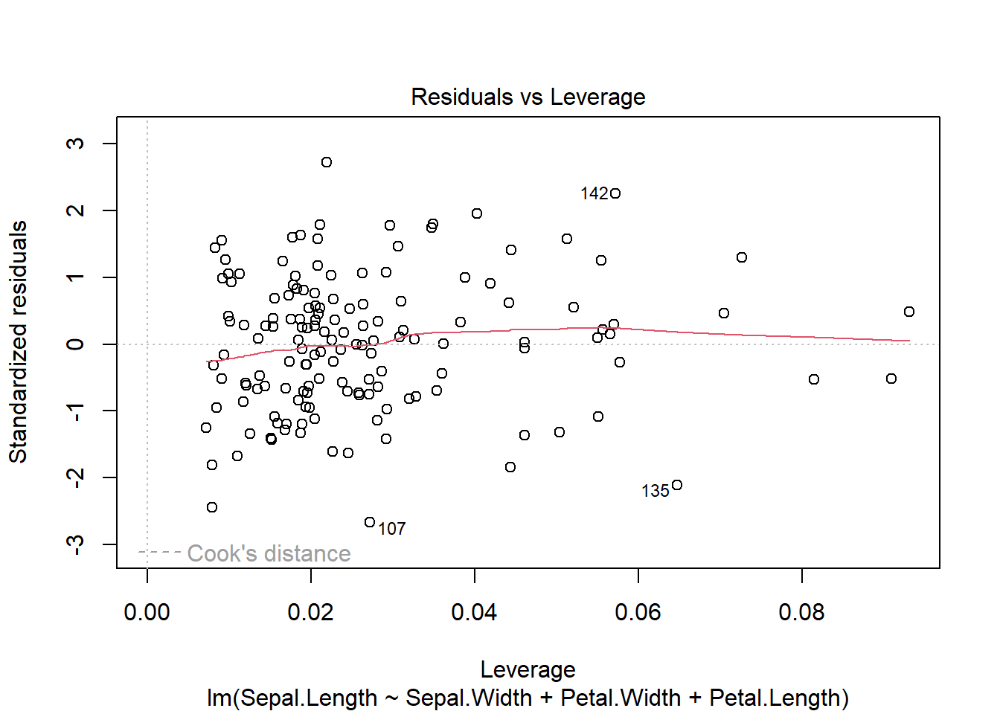
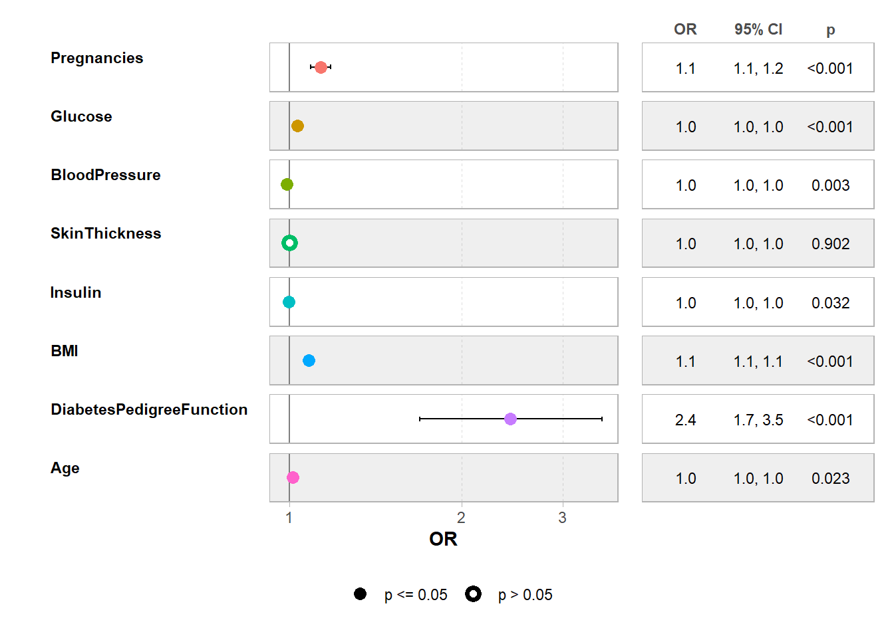

Chapter 4 Régressions
4.1 Introduction
Sous le terme de régression se cache de nombreux modèles: parmi les plus simples en statistiques comme la régression linéaire et pour aller jusqu’à des modèles très complexes comme les modèles multiniveaux, la régression quantile, etc.
La présentation ici ne se veut pas exhaustive. Nous présenterons que les régressions couramment utilisées dans en psychologie.
4.2 Régression linéaire
La régression linéaire est la plus simple des régressions. Elle suppose des relations linéaires entre les variables comme pour la corrélation. La variable à expliquer est continue et les variables explicatives sont quantitatives ou qualitatives.
Avant de faire de la modélisation, il est impératif de faire des statistiques descriptives des données.
4.2.1 Simple
Dans les statistiques descriptives, nous avons vu la corrélation. La régression linéaire simple n’est qu’une extension de la corrélation. Il y a une variable à expliquer et une variable explicative.
\(y=ax+b+\epsilon\)
En R, avec une variable x et y, on écrit cette formule de façon presque identique :
lm(y~x,data=my.data)
Le tide remplace le signe égal et on spécifie la data.frame avec l’option data. Dans le calcul par la fonction lm, il y a automatiquement le calcul du terme a, la corrélation et le terme b.
Comme cela a été vu dans le chapitre sur la corrélation il est d’observer une relation linéaire entre la variable à expliquer et la variable explicative.
Sinon il faut faire appliquer des transformations à la variable explicative.
Cela suppose des liens linéaires entre la variable à expliquer et les variables explicatives.
Par rapport à la corrélation, il y a un terme supplémentaire qui s’appelle en anglais l’intercept ou ordonnée à l’origine.

##
## Call:
## lm(formula = Sepal.Length ~ Petal.Width, data = iris)
##
## Coefficients:
## (Intercept) Petal.Width
## 4.7776 0.8886Le coefficient entre la variable à expliquer et la variable explcative est de 0,8886 tandis que l’ordonnée à l’origine est à 4.7776.
Si vous regardez sur le graphique, l’ordonnée à l’origine est la valeur de \(y\) quand \(x=0\). Ici pour la longueur des pétales et des sépales, l’intercept est la valeur pour une longueur nulle ce qui n’a pas de sens pratique.
Aussi dans certains cas nous sommes amenés à centrer la variable en soutrayant la moyenne de la variable explicative pour avoir une valeur qui a du sens: en centrant la variable l’ordonnée à l’origine est la valeur de la variable à expliquer pour la valeur moyenne de la variable explicative.
##
## Call:
## lm(formula = Sepal.Length ~ I(Petal.Width - mean(Petal.Width)),
## data = iris)
##
## Coefficients:
## (Intercept) I(Petal.Width - mean(Petal.Width))
## 5.8433 0.8886La valeurs pour la moyenne est donc de 5,8433 pour la valeur moyenne de Petal.width. Ce qui a plus de sens.
Sous R, on peut réaliser des calculs, des transformations de la valeur directement dans la régression comme c’est le cas dans l’exemple précédent avec l’opérateur I(). On peut l’utiliser pour ajouter le calcul d’un log par exemple.
4.2.2 Multiple
La relation linéaire ne doit pas forcement être visible entre la variable à expliquer et les variables explicatives prises 2 à 2. En effet pour la régression linéaire multiple les autres variables rentrent en jeu ce qui a pour conséquence de rendre plus complexe la vérification de la relation linéraire.
\(y=b_1x_1+b_2x_2+...+b_ix_i+b_0+\epsilon\)
Comme pour la régression précédente on utilise le ~ pour séparer à gauche la variable à expliquer des variables explicatives à droite. Les variables explicatives sont séparées par des +.
##
## Call:
## lm(formula = Sepal.Length ~ Sepal.Width + Petal.Width + Petal.Length,
## data = iris)
##
## Coefficients:
## (Intercept) Sepal.Width Petal.Width Petal.Length
## 1.8560 0.6508 -0.5565 0.7091Là également on peut avoir envie de donner sens à la valeur de l’intercept. Il faut dans ce cas là enlever la moyenne à chaque variable pour centrer le modèle. Toujours avec l’opérateur I().
Si on veut savoir quel est le coefficient qui impacte le plus la variable explicative, on peut comparer les pentes. Si on veut comparer les coefficients il faut qu’ils soient dans la même unité. Dans ce cas la méthode usuelle est de diviser par l’écart-type les variables explicatives et éventuellement la variable à expliquer. Cela donne des coefficients standardisés dont la valeur absolue de la taille indique l’amplitude de l’effet sur chacun des coefficients.
iris.std <- iris %>% mutate(across(where(is.numeric), scale))
(modele=lm(Sepal.Length~Sepal.Width+Petal.Width+Petal.Length,data=iris.std))##
## Call:
## lm(formula = Sepal.Length ~ Sepal.Width + Petal.Width + Petal.Length,
## data = iris.std)
##
## Coefficients:
## (Intercept) Sepal.Width Petal.Width Petal.Length
## -1.176e-16 3.426e-01 -5.122e-01 1.512e+004.2.3 Les diagnostics pour les deux types de régressions linéaires
Avant de regarder les résultats, il faut vérifier que les diagnostics sont corrects. En effet pour interpréter les résultats et notamment l’inférence (comme les tests sur les coefficients par exemple) il faut qu’un certain nombre d’hypothèses soient vérifiées:
- Non colinéarité des variables explicatives: aucune variable ne doit être une combinaison linéaire d’une autre variable.
- Indépendance des erreurs: les erreurs sont indépendantes entre observations
- Exogénéité : la taille des résidus doit être indépendante de la variable explicatives
- Homoscédasticité : la variance des erreurs est constante
- Normalité des termes d’erreur : la distribution des termes d’erreurs doit être aléatoire et suivre une loi normale
La non colinéarité se vérifie simplement en calculant le modèle. En effet la matrice est non inversible ou n’est pas de plein rang quand il y a des variables colinéaires. Certains tests plus complexe existent pour vérifier cette hypothèse notamment lorsqu’on a beaucoup de variables.
L’indépendance des résidus est rarement testé, il existe des tests comme le test de Durbin-Watson pour tester si les résidus sont auto-corrélés.
## lag Autocorrelation D-W Statistic p-value
## 1 -0.03992126 2.060382 0.798
## Alternative hypothesis: rho != 0Si le test n’est pas significatif alors il n’y a pas d’auto-corrélation.
Les autres hypothèses s’évaluent à l’aide des graphiques de diagnostics automatiques de R la plupart du temps :

- Le premier graphique Residuals vs Fitted permet de tester l’exogénéité. Si on observe pas de corrélation ou de structure entre les valeurs prédites et les résidus alors l’hypothèse est vérifiée.
- L’homoscédasticité et la normalité sont testés à l’aide du premier et second graphique qui permet de tester si la répartition suit une loi normale avec un graphique QQ plot. Si les points se distribuent sur la droite lors la distribution des résidus suit une loi normale.
Les autres graphiques permettent de répérer les observations avec des valeurs extrêmes pour les résidus et les valeurs prédites. Dans le cas d’une régression avancée, il convient de vérifier les valeurs prises par ces observations extrêmes qui sont repérées par leurs numéros dans le data.frame.
4.2.4 L’interprétation des sorties
Les sorties sont les suivantes :
##
## Call:
## lm(formula = Sepal.Length ~ Sepal.Width + Petal.Width + Petal.Length,
## data = iris.std)
##
## Residuals:
## Min 1Q Median 3Q Max
## -1.00012 -0.26555 0.02264 0.23802 1.02129
##
## Coefficients:
## Estimate Std. Error t value Pr(>|t|)
## (Intercept) -1.176e-16 3.102e-02 0.000 1
## Sepal.Width 3.426e-01 3.508e-02 9.765 < 2e-16 ***
## Petal.Width -5.122e-01 1.174e-01 -4.363 2.41e-05 ***
## Petal.Length 1.512e+00 1.209e-01 12.502 < 2e-16 ***
## ---
## Signif. codes: 0 '***' 0.001 '**' 0.01 '*' 0.05 '.' 0.1 ' ' 1
##
## Residual standard error: 0.3799 on 146 degrees of freedom
## Multiple R-squared: 0.8586, Adjusted R-squared: 0.8557
## F-statistic: 295.5 on 3 and 146 DF, p-value: < 2.2e-16Le tableau donne la valeur des coefficients (Intercept et coefficients beta) dans la colonne Estimate. L’erreur standard associée à l’estimation des coefficients, Std. Error, la valeur du test et la p-value qui indique si le coefficient est non nul: si la p-value est inférieure au seuil fixé (généralement 0,05) alors le coefficient est significativement différent de 0.
Regarder la valeur de l’erreur standard (Std Error) est important car si elle est très grande au regard des coefficients par exemple cela indique généralement que les hypothèses ne sont pas respectés et qu’il y a un problème d’identification du modèle.
Ensuite les résultats sont le Multiple R-square qui indique le R², c’est-à-dire la variance expliquée par le modèle. Une valeur le plus proche de 1 est ce que l’on cherche. Dans les sciences humaines des valeurs de coeffcients proche de 0,3 reste satisfaisant.
les résultats sont le Adjusted R-square est équivalent au R² mais il est pondéré par la complexité du modèle. En effet plus il y a de variable explicatrice plus le modèle va être explicatif. Mécaniquement. Aussi ce coefficient permet de pondérer le R² avec le nombre de variables pour limiter cet effet.
Le F-statistic et la p-value associée sur la dernière ligne donne un test de la non nullité du R². En pratique ce test n’est pas très utile.
4.2.5 Comprendre la régression avec des variables qualitatives
Jusqu’ici les variables étaient des variables quantitatives. Il fallait interpréter la pente des variables pour avoir une idée des effets sur la variable à expliquer.
Dans le cas d’une variable explicative, l’interprétation est légèrement différente.
Pour bien comprendre, on va dichotomiser une variable qualitative :
## Speciessetosa Speciesversicolor Speciesvirginica
## 49 1 0 0
## 65 0 1 0
## 74 0 1 0
## 146 0 0 1
## 122 0 0 1
## 150 0 0 1On a trois espèces, quand R va ajouter cette variable, il va dichotomiser la variable.
Nous aurons par exemple dans l’équation (première ligne) :
\(y=b_1x_1+b_2x_2+...+b_ix_i+b_Setosa*1+b_Versicolor*0+b_Virginica*0+b_0+\epsilon\) soit \(y=b_1x_1+b_2x_2+...+b_ix_i+b_Setosa*1+b_0+\epsilon\)
ou (deuxième ligne)
\(y=b_1x_1+b_2x_2+...+b_ix_i+b_Setosa*0+b_Versicolor*1+b_Virginica*0+b_0+\epsilon\) soit \(y=b_1x_1+b_2x_2+...+b_ix_i+b_Versicolor*1+b_0+\epsilon\)
Le x va être 0 ou 1. Par conséquent, cela ne va pas modifier la pente mais l’ordonnée à l’origine du point. De plus si on laisse les trois variables alors nous allons avoir un souci. En effet les trois modalités, si elles sont toutes présentes vont être colinéaires: si Setosa est à 1 alors Versicolor et Virginica sont à 0. C’est mécanique. Nous violerions alors une hypothèse du modèle.
Donc nous allons enlever une des modalités que nous allons appeler modalité de référence. Donc l’intercept sera calculé avec cette modalité de référence: il faudra lire, l’intercept quand l’espèce est setosa vaut. Quand l’iris sera versicolor ou virginica, il faudra lire par rapport à une plante Setosa l’intercept quand l’espèce est versicolor vaut.
Par défaut quand on rajoute une variable qualitative (un facteur) R utilise comme valeur de référence la première modalité pour une facteur ordonné ou bien la première dans l’ordre alphabétique. Pour changer ce comportement, il faut taper :
(modele=lm(Sepal.Length~Sepal.Width+Petal.Width+Petal.Length+relevel(Species,ref="versicolor"),data=iris.std))##
## Call:
## lm(formula = Sepal.Length ~ Sepal.Width + Petal.Width + Petal.Length +
## relevel(Species, ref = "versicolor"), data = iris.std)
##
## Coefficients:
## (Intercept) Sepal.Width
## -0.1705 0.2610
## Petal.Width Petal.Length
## -0.2901 1.7678
## relevel(Species, ref = "versicolor")setosa relevel(Species, ref = "versicolor")virginica
## 0.8738 -0.3622##
## Call:
## lm(formula = Sepal.Length ~ Sepal.Width + Petal.Width + Petal.Length +
## relevel(Species, ref = "versicolor"), data = iris.std)
##
## Residuals:
## Min 1Q Median 3Q Max
## -0.95915 -0.26416 0.01085 0.24460 0.88282
##
## Coefficients:
## Estimate Std. Error t value Pr(>|t|)
## (Intercept) -0.17053 0.07842 -2.175 0.03130 *
## Sepal.Width 0.26102 0.04530 5.761 4.87e-08 ***
## Petal.Width -0.29010 0.13918 -2.084 0.03889 *
## Petal.Length 1.76781 0.14609 12.101 < 2e-16 ***
## relevel(Species, ref = "versicolor")setosa 0.87380 0.29004 3.013 0.00306 **
## relevel(Species, ref = "versicolor")virginica -0.36221 0.14369 -2.521 0.01280 *
## ---
## Signif. codes: 0 '***' 0.001 '**' 0.01 '*' 0.05 '.' 0.1 ' ' 1
##
## Residual standard error: 0.3705 on 144 degrees of freedom
## Multiple R-squared: 0.8673, Adjusted R-squared: 0.8627
## F-statistic: 188.3 on 5 and 144 DF, p-value: < 2.2e-16ou bien
iris.std$Species2 <- relevel(iris.std$Species,ref="versicolor")
(modele=lm(Sepal.Length~Sepal.Width+Petal.Width+Petal.Length+Species2,data=iris.std))##
## Call:
## lm(formula = Sepal.Length ~ Sepal.Width + Petal.Width + Petal.Length +
## Species2, data = iris.std)
##
## Coefficients:
## (Intercept) Sepal.Width Petal.Width Petal.Length Species2setosa Species2virginica
## -0.1705 0.2610 -0.2901 1.7678 0.8738 -0.3622##
## Call:
## lm(formula = Sepal.Length ~ Sepal.Width + Petal.Width + Petal.Length +
## Species2, data = iris.std)
##
## Residuals:
## Min 1Q Median 3Q Max
## -0.95915 -0.26416 0.01085 0.24460 0.88282
##
## Coefficients:
## Estimate Std. Error t value Pr(>|t|)
## (Intercept) -0.17053 0.07842 -2.175 0.03130 *
## Sepal.Width 0.26102 0.04530 5.761 4.87e-08 ***
## Petal.Width -0.29010 0.13918 -2.084 0.03889 *
## Petal.Length 1.76781 0.14609 12.101 < 2e-16 ***
## Species2setosa 0.87380 0.29004 3.013 0.00306 **
## Species2virginica -0.36221 0.14369 -2.521 0.01280 *
## ---
## Signif. codes: 0 '***' 0.001 '**' 0.01 '*' 0.05 '.' 0.1 ' ' 1
##
## Residual standard error: 0.3705 on 144 degrees of freedom
## Multiple R-squared: 0.8673, Adjusted R-squared: 0.8627
## F-statistic: 188.3 on 5 and 144 DF, p-value: < 2.2e-16Il est à noter qu’on peut utiliser gtsummary :
| Characteristic | Beta | 95% CI1 | p-value |
|---|---|---|---|
| Sepal.Width | 0.26 | 0.17, 0.35 | <0.001 |
| Petal.Width | -0.29 | -0.57, -0.02 | 0.039 |
| Petal.Length | 1.8 | 1.5, 2.1 | <0.001 |
| Species2 | |||
| versicolor | — | — | |
| setosa | 0.87 | 0.30, 1.4 | 0.003 |
| virginica | -0.36 | -0.65, -0.08 | 0.013 |
| 1 CI = Confidence Interval | |||
4.3 Régression logistique
Dans le cas de la régression logistique, la variable à expliquer est binaire ou dichotomique.
\(y=\frac{e^{b_1x_1+b_2x_2+...+b_ix_i+b_0}}{1+e^{b_1x_1+b_2x_2+...+b_ix_i+b_0}}\)
En fait les observations vont prendre la valeur 0 ou 1 pour la variable à expliquer. Par contre le modèle lui ne va pas prendre que des valeurs 0 ou 1. En effet il va modéliser la probabilité que la valeur prise soit 1.
Donc les valeurs prises par le modèle vont varier de 0 à 1.
4.3.1 Modélisation
L’aspect du modèle sous R est très similaire à la forme utilisée pour les régressions linéaires. Les mêmes opérateurs et écritures sont autorisées.
Par contre comme ce n’est pas une régression linéaire, la fonction à appeler est légèrement différente ainsi que les arguments supplémentaires.
modele <- glm(Outcome~Pregnancies+Glucose+BloodPressure+SkinThickness+Insulin+BMI+DiabetesPedigreeFunction+
DiabetesPedigreeFunction+Age,data=diabetes,family=binomial(link="logit"))##
## Call:
## glm(formula = Outcome ~ Pregnancies + Glucose + BloodPressure +
## SkinThickness + Insulin + BMI + DiabetesPedigreeFunction +
## DiabetesPedigreeFunction + Age, family = binomial(link = "logit"),
## data = diabetes)
##
## Coefficients:
## Estimate Std. Error z value Pr(>|z|)
## (Intercept) -8.0264511 0.4306345 -18.639 < 2e-16 ***
## Pregnancies 0.1263845 0.0199997 6.319 2.63e-10 ***
## Glucose 0.0337202 0.0022258 15.150 < 2e-16 ***
## BloodPressure -0.0096446 0.0032441 -2.973 0.00295 **
## SkinThickness 0.0005185 0.0042301 0.123 0.90244
## Insulin -0.0012426 0.0005786 -2.148 0.03175 *
## BMI 0.0775549 0.0088819 8.732 < 2e-16 ***
## DiabetesPedigreeFunction 0.8877583 0.1860275 4.772 1.82e-06 ***
## Age 0.0129414 0.0057020 2.270 0.02323 *
## ---
## Signif. codes: 0 '***' 0.001 '**' 0.01 '*' 0.05 '.' 0.1 ' ' 1
##
## (Dispersion parameter for binomial family taken to be 1)
##
## Null deviance: 2569.4 on 1999 degrees of freedom
## Residual deviance: 1914.3 on 1991 degrees of freedom
## AIC: 1932.3
##
## Number of Fisher Scoring iterations: 5Ici il n’y a pas d’hypothèse à vérifier particulièrement.
Nous retrouvons le tableau des coefficients avec les estimations et les p-values.
Les Estimates sont d’une interprétation très différents.
Pour les variables continues, les coefficients sont interprétables selon leur signe si ils sont significativement différents de 0. Si le signe est négatif alors l’augmentation de la valeur tend à diminuer la probabilité que l’outcome soit égal à 1 et inversement.
Pour les variables dichotomiques, en prenant l’exponentielle du coefficient, nous obtenons l’odds ratio: 1) OR=1, la maladie est indépendante du symptôme 2) OR>1, la maladie est plus fréquente pour les individus qui ont le symptôme (var=1). 3) OR<1, la maladie est plus fréquente pour les individus qui n’ont pas le symptôme (var=0).
Pour une régression logistique, il n’y a pas de R². Parfois on peut voir un pseudo R². Mais sont utilisation n’est pas recommandé.
Sous R, il faut calculer la régression logistique avec la fonction lrm du paquet rms.
library(rms)
mod1b <- lrm(Outcome~Pregnancies+Glucose+BloodPressure+SkinThickness+Insulin+BMI+DiabetesPedigreeFunction+
DiabetesPedigreeFunction+Age,data=diabetes)
print(mod1b)## Logistic Regression Model
##
## lrm(formula = Outcome ~ Pregnancies + Glucose + BloodPressure +
## SkinThickness + Insulin + BMI + DiabetesPedigreeFunction +
## DiabetesPedigreeFunction + Age, data = diabetes)
##
## Model Likelihood Discrimination Rank Discrim.
## Ratio Test Indexes Indexes
## Obs 2000 LR chi2 655.08 R2 0.386 C 0.837
## 0 1316 d.f. 8 R2(8,2000)0.276 Dxy 0.675
## 1 684 Pr(> chi2) <0.0001 R2(8,1350.2)0.381 gamma 0.675
## max |deriv| 2e-08 Brier 0.154 tau-a 0.304
##
## Coef S.E. Wald Z Pr(>|Z|)
## Intercept -8.0265 0.4306 -18.64 <0.0001
## Pregnancies 0.1264 0.0200 6.32 <0.0001
## Glucose 0.0337 0.0022 15.15 <0.0001
## BloodPressure -0.0096 0.0032 -2.97 0.0029
## SkinThickness 0.0005 0.0042 0.12 0.9024
## Insulin -0.0012 0.0006 -2.15 0.0317
## BMI 0.0776 0.0089 8.73 <0.0001
## DiabetesPedigreeFunction 0.8878 0.1860 4.77 <0.0001
## Age 0.0129 0.0057 2.27 0.0232
4.4 Sélection des variables
4.4.1 Régressions pas à pas
Cela consiste à comparer des modèles en changer les variables une par une en calculant si la variable améliore ou détériore le modèle. Comme valeur de comparer la fonction utilise l’AIC ou le BIC qui sont des indices de fit du modèle.
Soit : 1) on part d’un modèle avec toutes les variables et on enlève au fur et à mesure (backward) 2) on part d’un modèle avec une variable choisie aléatoirement et on ajoute au fur et à mesure (forward) 3) on part d’un modèle avec une variable choisie aléatoirement et on ajoute au fur et à mesure ou on enlève (both ou stepwise)
## Start: AIC=1932.33
## Outcome ~ Pregnancies + Glucose + BloodPressure + SkinThickness +
## Insulin + BMI + DiabetesPedigreeFunction + DiabetesPedigreeFunction +
## Age
##
## Df Deviance AIC
## - SkinThickness 1 1914.3 1930.3
## <none> 1914.3 1932.3
## - Insulin 1 1919.0 1935.0
## - Age 1 1919.5 1935.5
## - BloodPressure 1 1923.2 1939.2
## - DiabetesPedigreeFunction 1 1937.6 1953.6
## - Pregnancies 1 1955.7 1971.7
## - BMI 1 1999.9 2015.9
## - Glucose 1 2203.3 2219.3
##
## Step: AIC=1930.35
## Outcome ~ Pregnancies + Glucose + BloodPressure + Insulin + BMI +
## DiabetesPedigreeFunction + Age
##
## Df Deviance AIC
## <none> 1914.3 1930.3
## + SkinThickness 1 1914.3 1932.3
## - Age 1 1919.5 1933.5
## - Insulin 1 1919.7 1933.7
## - BloodPressure 1 1923.4 1937.4
## - DiabetesPedigreeFunction 1 1937.8 1951.8
## - Pregnancies 1 1955.8 1969.8
## - BMI 1 2009.6 2023.6
## - Glucose 1 2209.0 2223.0##
## Call: glm(formula = Outcome ~ Pregnancies + Glucose + BloodPressure +
## Insulin + BMI + DiabetesPedigreeFunction + Age, family = binomial(link = "logit"),
## data = diabetes)
##
## Coefficients:
## (Intercept) Pregnancies Glucose BloodPressure
## -8.027315 0.126371 0.033681 -0.009581
## Insulin BMI DiabetesPedigreeFunction Age
## -0.001212 0.077874 0.889495 0.012894
##
## Degrees of Freedom: 1999 Total (i.e. Null); 1992 Residual
## Null Deviance: 2569
## Residual Deviance: 1914 AIC: 1930##
## Call:
## glm(formula = Outcome ~ Pregnancies + Glucose + BloodPressure +
## Insulin + BMI + DiabetesPedigreeFunction + Age, family = binomial(link = "logit"),
## data = diabetes)
##
## Coefficients:
## Estimate Std. Error z value Pr(>|z|)
## (Intercept) -8.0273146 0.4306244 -18.641 < 2e-16 ***
## Pregnancies 0.1263707 0.0199944 6.320 2.61e-10 ***
## Glucose 0.0336810 0.0022020 15.296 < 2e-16 ***
## BloodPressure -0.0095806 0.0032013 -2.993 0.00276 **
## Insulin -0.0012123 0.0005228 -2.319 0.02042 *
## BMI 0.0778743 0.0084946 9.167 < 2e-16 ***
## DiabetesPedigreeFunction 0.8894946 0.1855205 4.795 1.63e-06 ***
## Age 0.0128944 0.0056879 2.267 0.02339 *
## ---
## Signif. codes: 0 '***' 0.001 '**' 0.01 '*' 0.05 '.' 0.1 ' ' 1
##
## (Dispersion parameter for binomial family taken to be 1)
##
## Null deviance: 2569.4 on 1999 degrees of freedom
## Residual deviance: 1914.3 on 1992 degrees of freedom
## AIC: 1930.3
##
## Number of Fisher Scoring iterations: 5Ces méthodes ne sont pas enthousiasmantes. En effet cela amène à des modèles qui :
- dépendent du modèles tirés au hasard au début (stepwise/both)
- sont conservatifs comme la méthode backward qui tend à garder plus de variable que nécessaire
- nécessite beaucoup de comparaison et donc des approximations sur les tests
- …
Il est à noter que si on veut garder les variables dont les coefficients sont significatifs à 0,05, il suffit de modifier le paramètre k.
## Start: AIC=1959.33
## Outcome ~ Pregnancies + Glucose + BloodPressure + SkinThickness +
## Insulin + BMI + DiabetesPedigreeFunction + DiabetesPedigreeFunction +
## Age
##
## Df Deviance AIC
## - SkinThickness 1 1914.3 1954.3
## - Insulin 1 1919.0 1959.0
## <none> 1914.3 1959.3
## - Age 1 1919.5 1959.5
## - BloodPressure 1 1923.2 1963.2
## - DiabetesPedigreeFunction 1 1937.6 1977.6
## - Pregnancies 1 1955.7 1995.7
## - BMI 1 1999.9 2039.9
## - Glucose 1 2203.3 2243.3
##
## Step: AIC=1954.35
## Outcome ~ Pregnancies + Glucose + BloodPressure + Insulin + BMI +
## DiabetesPedigreeFunction + Age
##
## Df Deviance AIC
## <none> 1914.3 1954.3
## - Age 1 1919.5 1954.5
## - Insulin 1 1919.7 1954.7
## - BloodPressure 1 1923.4 1958.4
## + SkinThickness 1 1914.3 1959.3
## - DiabetesPedigreeFunction 1 1937.8 1972.8
## - Pregnancies 1 1955.8 1990.8
## - BMI 1 2009.6 2044.6
## - Glucose 1 2209.0 2244.0##
## Call: glm(formula = Outcome ~ Pregnancies + Glucose + BloodPressure +
## Insulin + BMI + DiabetesPedigreeFunction + Age, family = binomial(link = "logit"),
## data = diabetes)
##
## Coefficients:
## (Intercept) Pregnancies Glucose BloodPressure
## -8.027315 0.126371 0.033681 -0.009581
## Insulin BMI DiabetesPedigreeFunction Age
## -0.001212 0.077874 0.889495 0.012894
##
## Degrees of Freedom: 1999 Total (i.e. Null); 1992 Residual
## Null Deviance: 2569
## Residual Deviance: 1914 AIC: 1930##
## Call:
## glm(formula = Outcome ~ Pregnancies + Glucose + BloodPressure +
## Insulin + BMI + DiabetesPedigreeFunction + Age, family = binomial(link = "logit"),
## data = diabetes)
##
## Coefficients:
## Estimate Std. Error z value Pr(>|z|)
## (Intercept) -8.0273146 0.4306244 -18.641 < 2e-16 ***
## Pregnancies 0.1263707 0.0199944 6.320 2.61e-10 ***
## Glucose 0.0336810 0.0022020 15.296 < 2e-16 ***
## BloodPressure -0.0095806 0.0032013 -2.993 0.00276 **
## Insulin -0.0012123 0.0005228 -2.319 0.02042 *
## BMI 0.0778743 0.0084946 9.167 < 2e-16 ***
## DiabetesPedigreeFunction 0.8894946 0.1855205 4.795 1.63e-06 ***
## Age 0.0128944 0.0056879 2.267 0.02339 *
## ---
## Signif. codes: 0 '***' 0.001 '**' 0.01 '*' 0.05 '.' 0.1 ' ' 1
##
## (Dispersion parameter for binomial family taken to be 1)
##
## Null deviance: 2569.4 on 1999 degrees of freedom
## Residual deviance: 1914.3 on 1992 degrees of freedom
## AIC: 1930.3
##
## Number of Fisher Scoring iterations: 5Pour contrer certaines critiques il est possible de personnaliser le démarrage et les variables à disposition à l’aide de l’argument scope.
Par exemple pour un stepwise en démarrant de rien.
modnull <- glm(Outcome ~ 1,data=diabetes,family=binomial(link="logit"))
modfull <- glm(Outcome ~ .,data=diabetes,family=binomial(link="logit"))
(modele3 <- stepAIC(modele,direction="both",k=5,
scope=list(lower=modnull,upper=modfull)))## Start: AIC=1959.33
## Outcome ~ Pregnancies + Glucose + BloodPressure + SkinThickness +
## Insulin + BMI + DiabetesPedigreeFunction + DiabetesPedigreeFunction +
## Age
##
## Df Deviance AIC
## - SkinThickness 1 1914.3 1954.3
## - Insulin 1 1919.0 1959.0
## <none> 1914.3 1959.3
## - Age 1 1919.5 1959.5
## - BloodPressure 1 1923.2 1963.2
## - DiabetesPedigreeFunction 1 1937.6 1977.6
## - Pregnancies 1 1955.7 1995.7
## - BMI 1 1999.9 2039.9
## - Glucose 1 2203.3 2243.3
##
## Step: AIC=1954.35
## Outcome ~ Pregnancies + Glucose + BloodPressure + Insulin + BMI +
## DiabetesPedigreeFunction + Age
##
## Df Deviance AIC
## <none> 1914.3 1954.3
## - Age 1 1919.5 1954.5
## - Insulin 1 1919.7 1954.7
## - BloodPressure 1 1923.4 1958.4
## + SkinThickness 1 1914.3 1959.3
## - DiabetesPedigreeFunction 1 1937.8 1972.8
## - Pregnancies 1 1955.8 1990.8
## - BMI 1 2009.6 2044.6
## - Glucose 1 2209.0 2244.0##
## Call: glm(formula = Outcome ~ Pregnancies + Glucose + BloodPressure +
## Insulin + BMI + DiabetesPedigreeFunction + Age, family = binomial(link = "logit"),
## data = diabetes)
##
## Coefficients:
## (Intercept) Pregnancies Glucose BloodPressure
## -8.027315 0.126371 0.033681 -0.009581
## Insulin BMI DiabetesPedigreeFunction Age
## -0.001212 0.077874 0.889495 0.012894
##
## Degrees of Freedom: 1999 Total (i.e. Null); 1992 Residual
## Null Deviance: 2569
## Residual Deviance: 1914 AIC: 1930##
## Call:
## glm(formula = Outcome ~ Pregnancies + Glucose + BloodPressure +
## Insulin + BMI + DiabetesPedigreeFunction + Age, family = binomial(link = "logit"),
## data = diabetes)
##
## Coefficients:
## Estimate Std. Error z value Pr(>|z|)
## (Intercept) -8.0273146 0.4306244 -18.641 < 2e-16 ***
## Pregnancies 0.1263707 0.0199944 6.320 2.61e-10 ***
## Glucose 0.0336810 0.0022020 15.296 < 2e-16 ***
## BloodPressure -0.0095806 0.0032013 -2.993 0.00276 **
## Insulin -0.0012123 0.0005228 -2.319 0.02042 *
## BMI 0.0778743 0.0084946 9.167 < 2e-16 ***
## DiabetesPedigreeFunction 0.8894946 0.1855205 4.795 1.63e-06 ***
## Age 0.0128944 0.0056879 2.267 0.02339 *
## ---
## Signif. codes: 0 '***' 0.001 '**' 0.01 '*' 0.05 '.' 0.1 ' ' 1
##
## (Dispersion parameter for binomial family taken to be 1)
##
## Null deviance: 2569.4 on 1999 degrees of freedom
## Residual deviance: 1914.3 on 1992 degrees of freedom
## AIC: 1930.3
##
## Number of Fisher Scoring iterations: 5Il est à noter que les résultats peuvent être donnés par gtsummary
| Characteristic | OR1 | 95% CI1 | p-value |
|---|---|---|---|
| Pregnancies | 1.13 | 1.09, 1.18 | <0.001 |
| Glucose | 1.03 | 1.03, 1.04 | <0.001 |
| BloodPressure | 0.99 | 0.98, 1.00 | 0.003 |
| Insulin | 1.00 | 1.00, 1.00 | 0.020 |
| BMI | 1.08 | 1.06, 1.10 | <0.001 |
| DiabetesPedigreeFunction | 2.43 | 1.69, 3.51 | <0.001 |
| Age | 1.01 | 1.00, 1.02 | 0.023 |
| 1 OR = Odds Ratio, CI = Confidence Interval | |||
On peut comparer l’efficacité des modèles en utilisant la commande compare_performance du paquet performance.
## # Comparison of Model Performance Indices
##
## Name | Model | AIC (weights) | BIC (weights) | Tjur's R2 | RMSE
## ---------------------------------------------------------------------
## modele | glm | 1932.3 (0.270) | 1982.7 (0.022) | 0.310 | 0.393
## modele3 | glm | 1930.3 (0.730) | 1975.2 (0.978) | 0.310 | 0.393